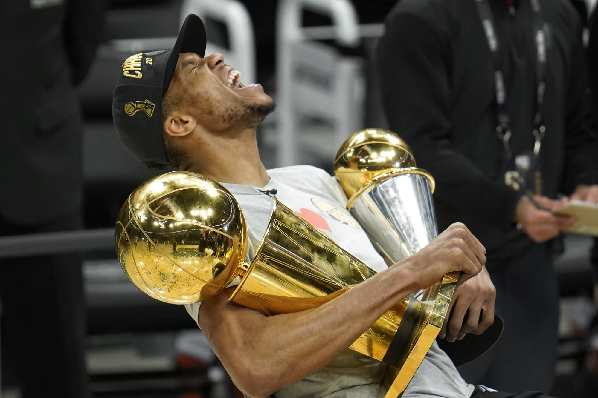

Over the course of my life I have received my fair share of awards and accolades. But these are the most recent and most meaningful to my current journey of life.
| Award | Date | Description |
|---|---|---|
| Deans List | 2022 (2)* | The Dean's List is awarded to students in great academic standing with a semester GPA of 3.5. |
| New Sqaure Scholarship | 2021 | $1,000 rewarded to me for being in great academic standing. |
| Honor Society | 2021 | I qualified to join for my academic standing, achievements, leadership, and commitment to service. |
(#)* = I made Deans List twice so far.
When I look at these awards, there was a time when I could only dream of achieveing these. Over a decade ago is where it all started. I had low self esteem, low confidence, I was bullied, diganosed with physical and mental medical issues, and very few believed in my educational and athletic abitlities. Although many regret or have seen me thrive, I can't blame them for not believeing at the time. I did not care about school that much, was physically challenged due to my height and small frame, and I always had somekind of setback that I have to overcome (whether it was by fate or self infliction. But through it all I was able to pursue many awards, choose a great major to study for a great career, and live my life the way I have envisioned it so far. There will be many more challenges, but I will be ready for them all. Is it really a testimony if there are no test????
